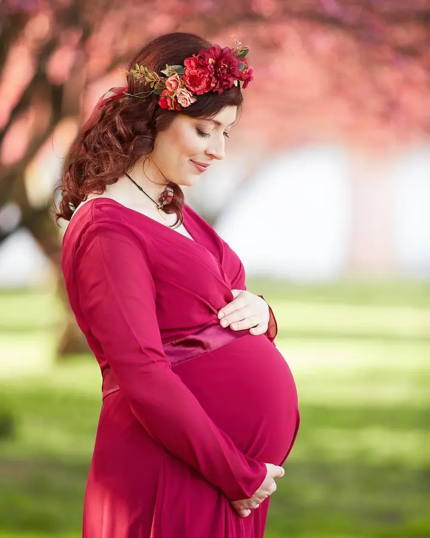
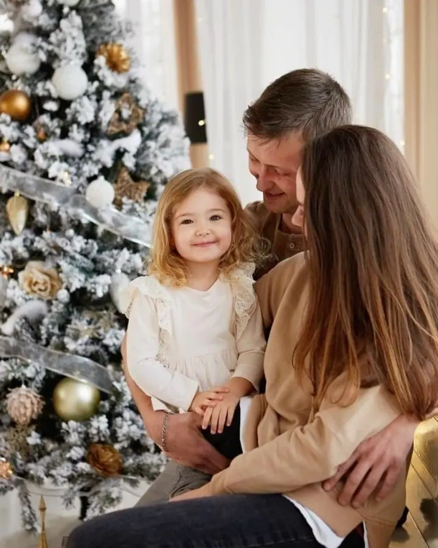
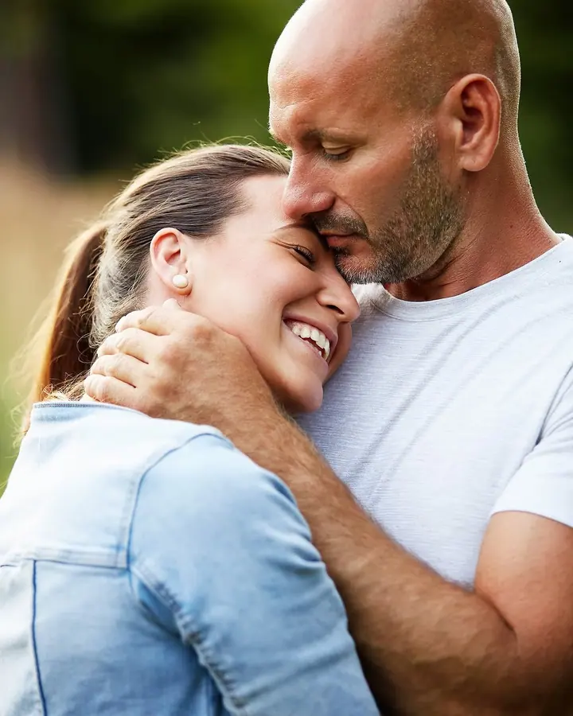
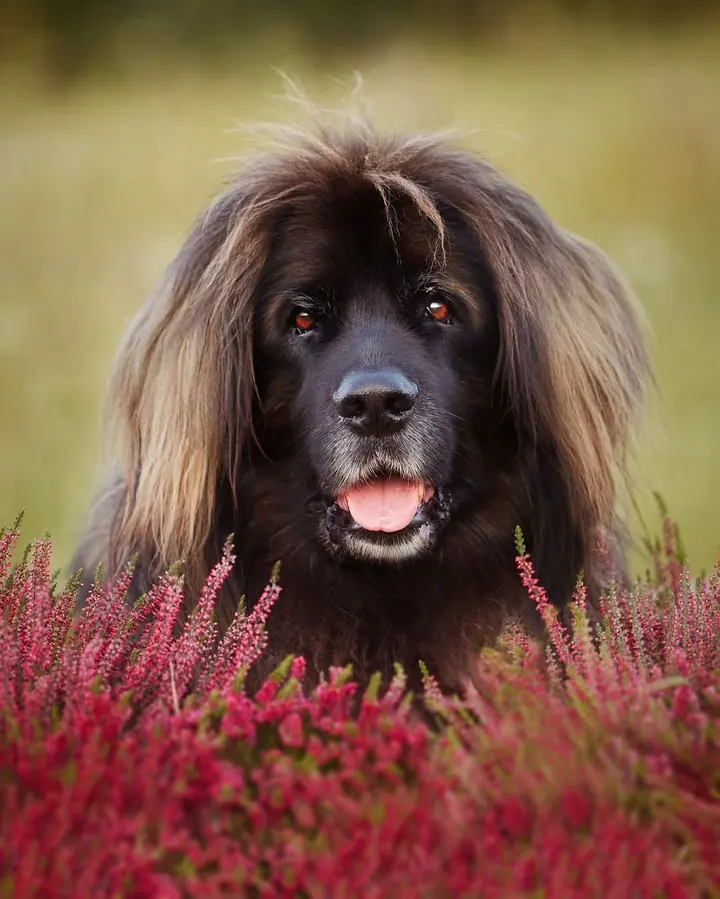
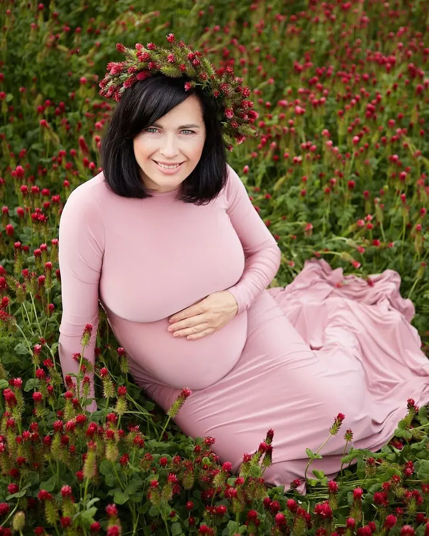
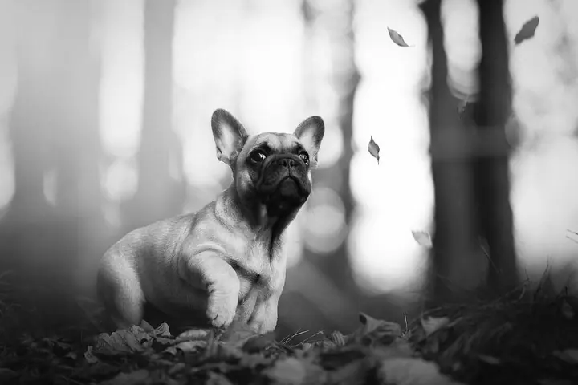

Ženské portréty
Glamour, fine art i brand nebo business portréty. Šaty vám ráda zapůjčím a v ceně je profesionální retuš pleti, okolí a případně proporcí.





Jmenuji se Žaneta Drahokoupilová a fotím ženské portréty, rodiny a maminky, které čekají miminko. Nejčastěji mě potkáte venku v okolí Sázavy, Prahy a Benešova. Že jste se nikdy nefotili? Nevadí, focením vás provedu tak, abyste se cítili dobře.
Více o mně
„Fotky prostě patří na papír.“
— Žaneta Drahokoupilová
Glamour, fine art i brand nebo business portréty. Šaty vám ráda zapůjčím a v ceně je profesionální retuš pleti, okolí a případně proporcí.
Hodinu až hodinu a půl spolu fotíme venku, s menšími dětmi nejvýš hodinu. Dostanete 10 fotografií v elektronické i tištěné podobě za 2 500 Kč.
Hodina a půl jen pro vás a vaše bříško. V ceně 2 700 Kč je zapůjčení šatů, po domluvě můžeme fotit i v ateliéru.
Novorozenecké a rodinné focení reportážní formou u vás doma. Dostanete 20 fotografií v elektronické i tištěné podobě za 3 500 Kč.
Jsem veselá, empatická a milovnice čokolády. Před pár lety jsem odešla z korporátu a rozhodla se, že se naučím fotit. Zrušila jsem penzijko, pořídila fotoaparát a objektivy, absolvovala několik kurzů hlavně k retuším a od té doby fotím, dál se vzdělávám a zase fotím.
Na focení mám ráda, že nikdy není stejné. Poznávám nové lidi a jejich příběhy. Každý z nás je jedinečný a stejně tak se žádný okamžik už nebude opakovat. Já jsem tu od toho, abych vám ho pomohla zvěčnit.
Fotky podle mě patří na papír. Ke každému focení proto dostanete i tištěné fotografie v jemném koženkovém obalu, který sama vyrábím, a k portrétům luxusní box na magnet. Chci, abyste měli dobrý pocit z celé cesty, od první zprávy až po chvíli, kdy fotky vezmete do ruky.
Spojíme se po telefonu, přes online schůzku, osobně u kávy nebo e-mailem. Od prvního kontaktu máte mou plnou pozornost.
Zajímá mě, proč se chcete fotit a kam fotky půjdou: do alba, na stěnu, do práce nebo na sítě. Podle toho pak focení připravím.
E-mailem vám pošlu všechny informace k focení, abyste se mohli v klidu připravit. Do poslední chvíle můžeme všechno doladit, třeba šaty nebo místo.
Na focení vás povedu, abyste se cítili přirozeně. Vybrané fotografie dostanete v elektronické i tištěné podobě v ručně vyrobeném obalu.
Určitě. Focením vás provedu tak, aby vám to slušelo a cítili jste se dobře. Nemusíte nic umět, stačí přijít.
Většinou venku, nejčastěji v okolí Sázavy, Uhlířských Janovic, Říčan, Ondřejova, Benešova nebo v Praze. Po domluvě můžu zajistit ateliér nebo jiné prostory.
Na těhotenské a portrétní focení mám k zapůjčení spoustu šatů v různých velikostech i doplňky, zapůjčení je v ceně. K portrétům doporučuji vizážistku, obvykle vyjde na 1 800 Kč za vlasy i make-up a ráda vám nějakou doporučím.
Ano. U rodinného a lifestylového focení stojí každá fotka navíc 200 Kč, u portrétů 450 Kč. Rodinný balíček s 20 fotkami vyjde na 3 500 Kč a těhotenský na 3 700 Kč.
fotografka@zanetadrahokoupilova.cz
Sázava · Praha · Kolín